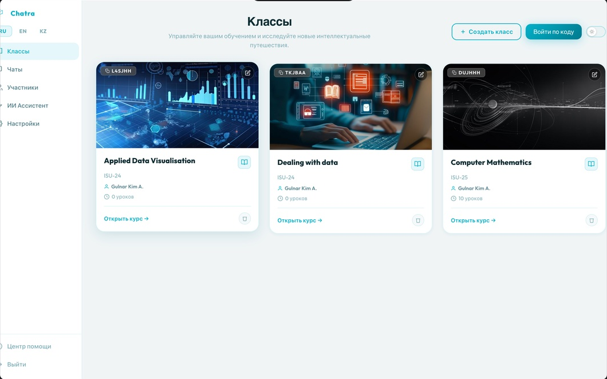
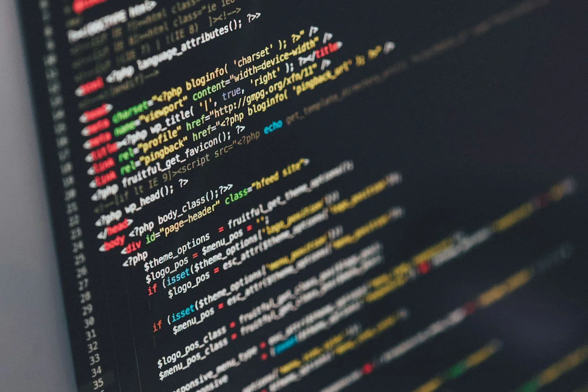
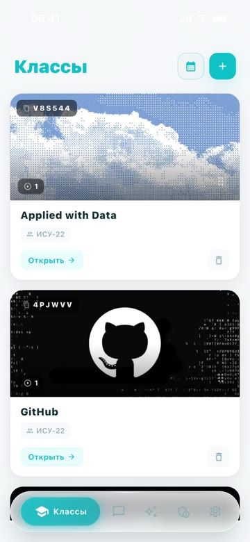
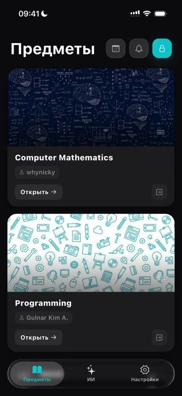
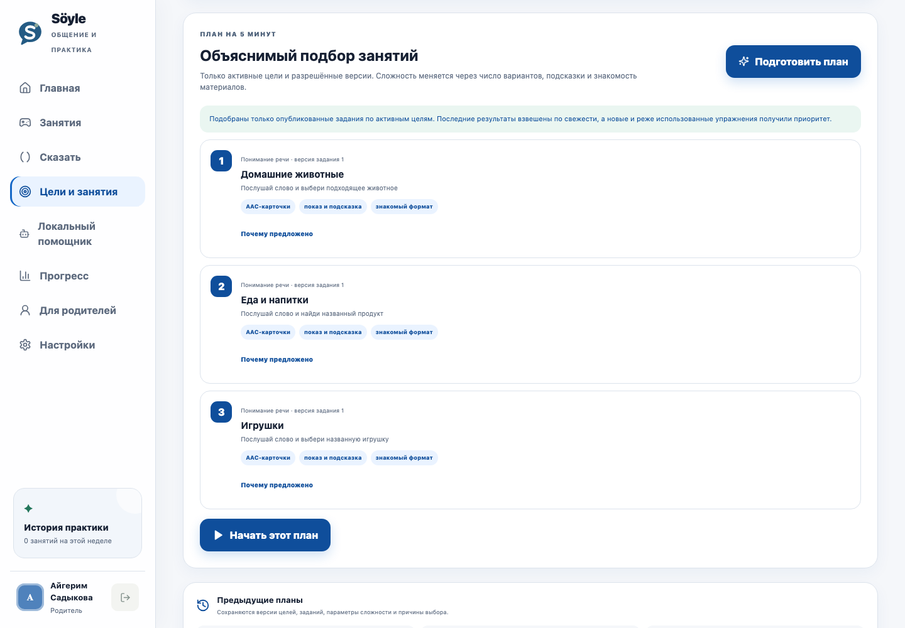
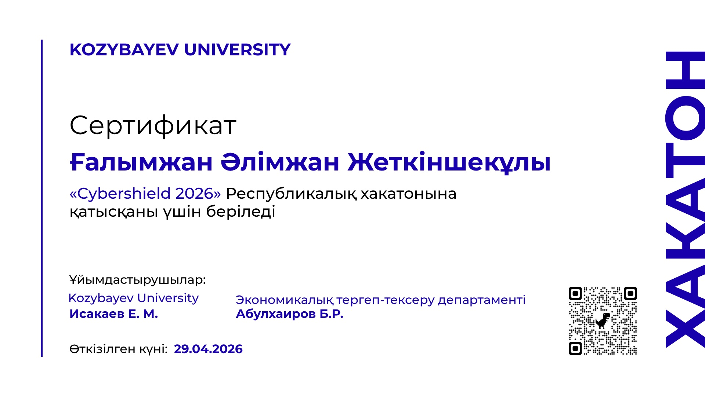
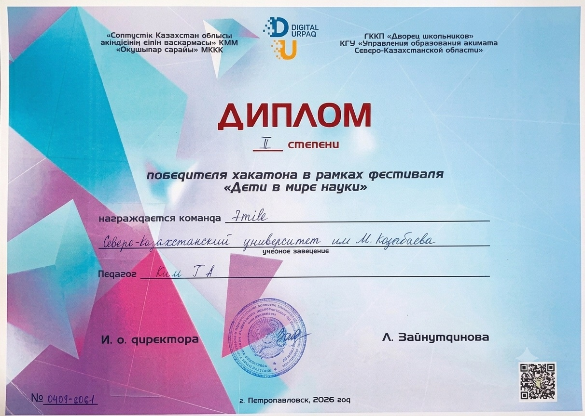
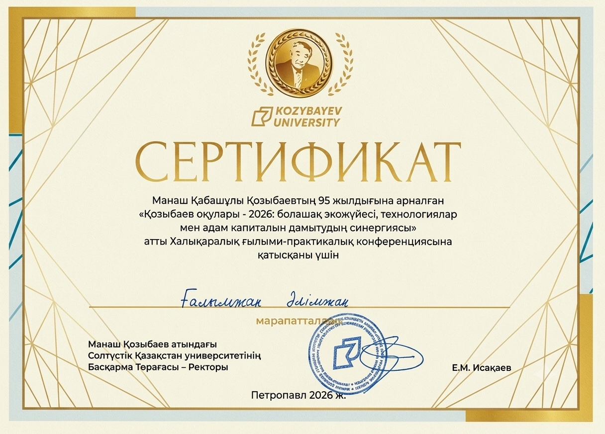
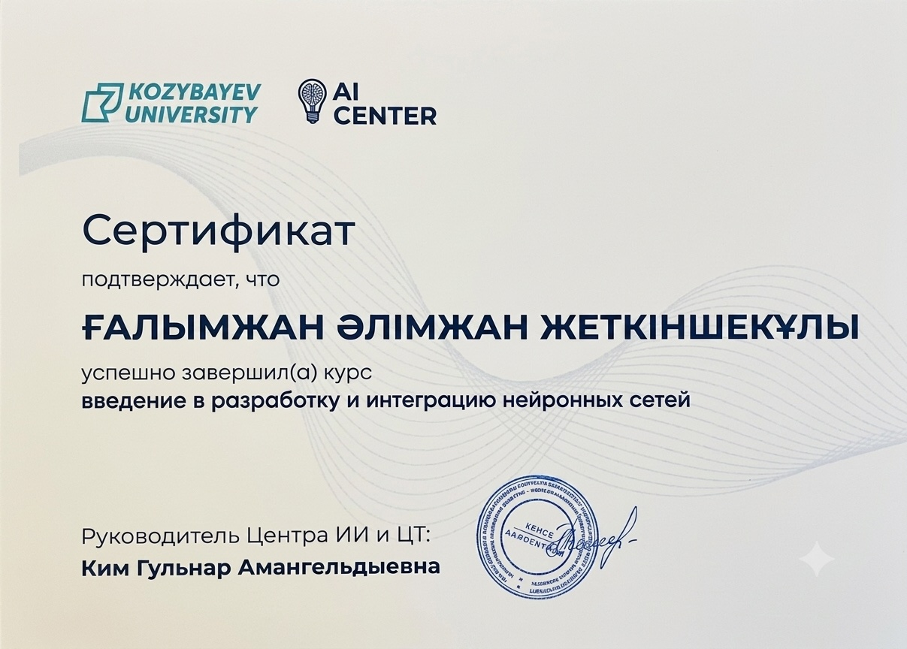
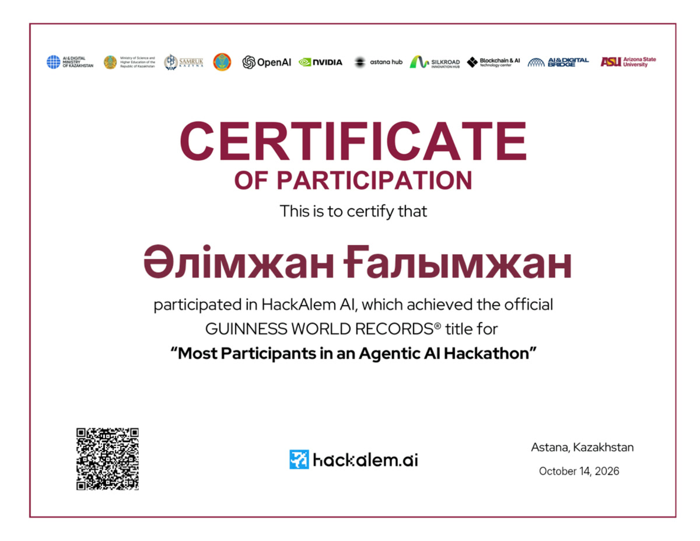

UI Craft
Clear hierarchy.
Details with a purpose.
I’m Alimzhan, a frontend developer based in North Kazakhstan. I like making interfaces clear, useful, and a little more alive.
I’m currently a second-year Information Systems and Management student in the dual-degree program at Kozybayev University and the University of Arizona.
Frontend is my main direction. I also build mobile and full-stack products, exploring how design, animation, and technology can work together.
I combine engineering, design, and product thinking to create experiences that feel useful, thoughtful, and human.
I enjoy working across the full spectrum, from visual details to working products. Each part informs the others, and together they help me build better work.

Clear hierarchy.
Details with a purpose.

Responsive layouts.
Connected, working experiences.
Understand the problem.
Give the idea a useful shape.


Helpful feedback.
A clear next step.
I work through the problem, give it structure, shape the experience, and learn by building it.
Find the problem, the people, and what matters most.
Connect the content, screens, and the steps between them.

Shape the layout, interaction states, and visual direction.
Implement, test, and improve until the flow works.
Different chapters.
One direction: making useful things, and getting better at the craft.
Kozybayev University · University of Arizona
A dual-degree program connecting technology and management. I study alongside independent product development.
Swift · SwiftUI
Built application features, integrated REST APIs, and debugged mobile flows for a confidential product. The work covered user interfaces, application logic, and day-to-day delivery through Git.
Co-founder & Mobile Application Developer
Owned the Flutter mobile client and coordinated FastAPI/PostgreSQL delivery: role-based flows, authentication, notifications, and automated tests.
Family speech practice · Web product
A family experience with separate child and parent flows, adaptive practice, and a typed web interface built with Next.js, React, and FastAPI.
Kozybayev University AI Center · CS50P
Completed the AI Center course in neural network development and integration. I also learn programming foundations through CS50’s Introduction to Programming with Python.
CyberShield · Digital Urpaq · HackAlem
Participated in CyberShield and HackAlem AI, received a second-degree team diploma at Digital Urpaq, and took part in a scientific and practical conference. Original documents follow below.
Courses, competitions, and academic milestones along the way. A few tangible reminders to keep learning.
Competition

View certificateKozybayev University
29 April 2026
Team recognition

View certificateDigital Urpaq festival
2026
Academic participation

View certificateKozybayev University
2026
Course completion

View certificateKozybayev University · AI Center
Hackathon

View certificateHackAlem AI
14 October 2026
Also in my learning journey: CS50’s Introduction to Programming with Python.
Have a project in mind or just want to say hi? I’m open to new opportunities and interesting conversations.